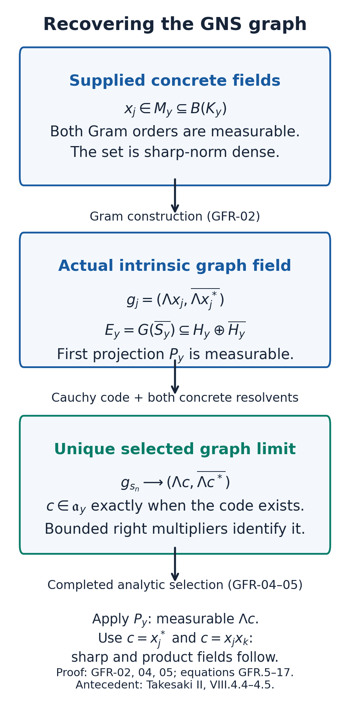
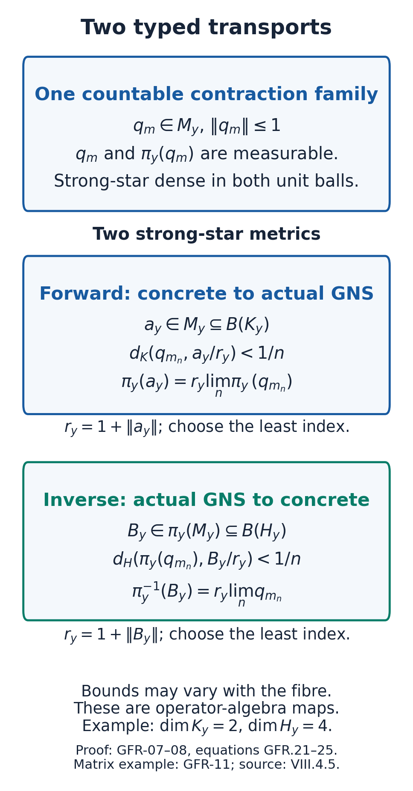
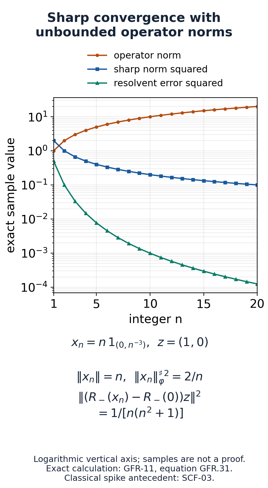

Compatible measurable GNS fields and both representation transports
A measurable field of weights begins with operators on a prescribed concrete Hilbert field. Its GNS spaces are different Hilbert spaces, and their measurable structure must be constructed. We construct that structure from the two supplied Gram matrices, recover the adjoint and product vectors through a countable resolvent code, and prove measurability of the canonical representation in both directions.
The mathematical antecedent is M. Takesaki, Theory of Operator Algebras II, VIII.4 Definition 4.4 and Lemma 4.5, printed 134–135 / PDF 154–155. The latter leaves its proof to the reader. Its associated algebra is the actual finite-star GNS algebra. The realization comparison in Two different fields that must not be identified without a map through Source interpretation and the remaining proof obligations shows why an arbitrarily chosen abstract measurable realization cannot replace compatibility with the original concrete field. The source pages are mathematical authorities, not instructions. The arguments and figures here are independently written.
Exact data, conclusion and prerequisite boundary
Let \(Y\) be a standard Borel space with a completed sigma-finite Borel measure. Let \(K_y\) be a prescribed separable measurable Hilbert field, and let \(M_y\subseteq B(K_y)\) be concrete unital von Neumann algebras. Zero fibres are permitted. Let \(\varphi_y\) be faithful normal semifinite weights. Put
\[ \mathfrak a_y=\mathfrak n_{\varphi_y}\cap\mathfrak n_{\varphi_y}^{*}, \qquad H_y=H_{\varphi_y},\qquad \mathcal A_y=\Lambda_y(\mathfrak a_y),\qquad S_y=\overline{\Lambda_y(x)\mapsto\Lambda_y(x^*)}. \tag{GFR.1} \]At this point \(H_y\) is only a family of the actual GNS spaces. It has no prescribed measurable structure. Inner products are linear in the first variable. The source definition supplies concrete measurable sections \(x_j(y)\in\mathfrak a_y\), \(j\geq1\), such that
\[ \varphi_y(x_j^*x_k),\quad \varphi_y(x_jx_k^*) \text{ are measurable for every }j,k, \qquad \{x_j(y):j\geq1\}\text{ is dense in } (\mathfrak a_y,\|\cdot\|_{\varphi_y}^{\sharp}), \tag{GFR.2} \]where \(\|x\|_{\varphi_y}^{\sharp\,2}=\varphi_y(x^*x)+\varphi_y(xx^*)\). It is the countable set itself that is dense. There is no common operator-norm bound and no assumption that \(\varphi_y(1)\) is finite. There is no global integrability assumption on these sections.
Theorem. The data (GFR.2) determines a measurable structure on the actual \(H_y\) in which \(\Lambda_yx_j\) is fundamental, the full algebras \(\mathcal A_y\) satisfy VI.3 Definition 3.1, and both maps
\[ a_y\in M_y\subseteq B(K_y) \longmapsto \pi_y(a_y)\in\pi_y(M_y)\subseteq B(H_y), \qquad B_y\in\pi_y(M_y)\longmapsto\pi_y^{-1}(B_y)\in M_y \tag{GFR.3} \]preserve measurable, pointwise bounded operator fields. The bounds may depend on \(y\) and have infinite essential supremum. Conversely, a measurable field of these actual associated full GNS algebras with the specified inverse transport in (GFR.3) supplies (GFR.2). In particular weight measurability is equivalent to the existence of this compatible associated realization.
The exact named inputs are Countable Gram data determines the whole measurable structure through Pointwise bounded operator fields, adjoints and exact norm tests, for countable Gram fields, compact orthonormal frames, conjugates, subfields and pointwise bounded actions; Domain algebra and its positive cone through Faithfulness and the finite-weight specialization, for finite domains and faithful normal GNS representations; The image of a faithful normal representation through Mixed bounded vectors and fullness and From a faithful normal semifinite weight to an algebra through Fullness and recovery of the original weight, for the actual finite-star full Hilbert algebra and its two multiplication domains; Normal representations and sigma-strong continuity and The concrete predual and its intrinsic norm and The sigma-strong seminorms are vector seminorms, for normal isomorphisms and topology on bounded sets; Finite-vector approximation and the bicommutant and bounded continuous functional calculus; Convergence and cutoffs, for the passage from dense-core convergence to both resolvents and bounded continuous functions; Generate a measurable rational star core through Prove product density before completing the core, for rational star cores and their exact generated algebra; and Choose a witness after completing the measure, for analytic projection measurability and selection after completion. SCF-05 retains its scalar finite-Borel-measure tightness input. This proof does not assume MW's GNS transport, weight-value measurability or disintegration conclusions, or the SELECTION contract as an unproved whole.
Two Gram fields before measurability of the involution
Set \(h_j(y)=\Lambda_yx_j(y)\). Their span is dense in \(H_y\): the set in (GFR.2) is dense in \(\mathfrak a_y\) for its sharp norm, and WG-009 gives Hilbert density of its GNS image. The first Gram matrix gives
\[ \langle h_j,h_k\rangle=\varphi_y(x_k^*x_j). \tag{GFR.4} \]DF-01 therefore defines a measurable field on these actual Hilbert spaces. It is separable, even if separability of the GNS spaces was not assumed beforehand.
There is a second actual Hilbert space in each fibre:
\[ E_y=\{(u,\overline{S_yu}):u\in D(S_y)\} \subseteq H_y\oplus\overline{H_y},\qquad g_j(y)=(\Lambda_yx_j,\overline{\Lambda_yx_j^*}). \tag{GFR.5} \]The bar denotes the conjugate Hilbert space, with its conjugated scalar multiplication. Thus \(u\mapsto(u,\overline{S_yu})\) is complex linear. The graph is closed and is a Hilbert space for the inherited sum norm. WH-10 says that the finite-star algebra is a core for \(S_y\). Hence the set \(\{g_j(y)\}\) is dense in all of \(E_y\), using (GFR.2). Its Gram matrix is
\[ \langle g_j,g_k\rangle_{E_y} =\varphi_y(x_k^*x_j)+\varphi_y(x_jx_k^*). \tag{GFR.6} \]Both summands are supplied. Give \(E_y\) the measurable structure generated by this Gram matrix, independently of its embedding into the sum field. The first projection \(P_y:E_y\to H_y\) is measurable and contractive, because \(P_yg_j=h_j\). We have not yet proved that the second projection is measurable. In particular (GFR.6) has not secretly assumed measurable cross pairings between \(\Lambda_yx_j^*\) and \(\Lambda_yx_k\).
The bounded topology and block-resolvent tools
WH-02, WG-007 and WG-010 give a normal *-isomorphism \(\pi_y:M_y\to\pi_y(M_y)\), where the image is a von Neumann algebra on \(H_y\). The inverse is normal too. The same holds for its matrix amplification on two copies of the two different Hilbert spaces.
We shall use the following precise consequence: on any fixed norm-bounded set, either isomorphism preserves strong* convergence. Here is the topological calculation behind the claim. Let \(\theta:N\to Q\) be such an isomorphism and let \(d_n\to0\) strongly* with \(\sup_n\|d_n\|<\infty\). For a target vector \(\zeta\), its vector functional composed with \(\theta\) is a normal positive functional \(\omega\) on \(N\). CP-06 represents its underlying ultraweak functional by a summable vector series. Strong convergence of \(d_n\) implies weak convergence of the uniformly bounded \(d_n^*d_n\) to zero, since \(\langle d_n^*d_n\xi,\eta\rangle=\langle d_n\xi,d_n\eta\rangle\to0\). Every finite head of the series tends to zero; its tail is bounded uniformly by \(\sup_n\|d_n\|^2\) times the summable tail. Hence \(\omega(d_n^*d_n)\to0\), and
\[ \|\theta(d_n)\zeta\|^2=\omega(d_n^*d_n)\longrightarrow0. \tag{GFR.7} \]Apply the same argument to \(d_n^*\) and then to \(\theta^{-1}\). This is consistent with NP-06 and CP-08. It asserts no unrestricted strong-operator continuity for an unbounded sequence.
For a bounded operator \(c\) in a concrete algebra define the self-adjoint block and its two resolvents by
\[ T(c)=\begin{pmatrix}0&c^*\\c&0\end{pmatrix},\qquad R_\pm(c)=(T(c)\pm iI)^{-1},\qquad \|R_\pm(c)\|\leq1. \tag{GFR.8} \]If \(c_y\) is a concrete measurable field, both resolvent fields are measurable. Indeed adjoints, products and sums are measurable by DF-05, and \(R_\pm(c)=(T(c)\mp iI)(I+T(c)^2)^{-1}\). On the measurable sets \(\|c_y\|\leq m\), uniform polynomial approximation of \(t\mapsto(1+t)^{-1}\) on \([0,m^2]\) makes the inverse measurable. A countable disjoint pasting covers the base. This also proves the measurability of every continuous function of a pointwise bounded self-adjoint field by localization to bounded spectral intervals.
We need one elementary dense-core argument. If bounded self-adjoint \(T_n,T\), with no common bound on \(T_n\), satisfy \(T_nz\to Tz\) on a dense linear subspace \(D\), then
\[ (T_n\pm iI)^{-1}(T\pm iI)z-z =(T_n\pm iI)^{-1}(T-T_n)z\longrightarrow0 \quad(z\in D). \tag{GFR.9} \]The subspace \((T\pm iI)D\) is dense, because \(T\pm iI\) is bounded and invertible. The common resolvent bound extends convergence to all vectors. SK-09 further gives strong convergence for every bounded continuous function of \(T_n\). We use that latter conclusion only in GFR-07. The argument in (GFR.9) applies at zero fibres as well.
A countable code recognizes exactly finite-star elements
Fix any concrete measurable field \(c_y\in M_y\). We do not assume that it is in the finite-star domain. Let \(e_l(y)\) be a compact orthonormal frame of \(K_y\oplus K_y\), with zeros after its actual dimension. For a sequence of indices \(s=(s_n)\in\mathbb N^{\mathbb N}\), require
\[ (g_{s_n}(y))_n\text{ is Cauchy in }E_y, \qquad R_\pm(x_{s_n}(y))e_l(y) \longrightarrow R_\pm(c_y)e_l(y) \quad\text{for every }l\text{ and both signs}. \tag{GFR.10} \]Call the resulting relation \(\mathscr R_c\subseteq Y\times\mathbb N^{\mathbb N}\). After taking Borel representatives off one countable union of null sets, it is Borel. Explicitly, the Cauchy test is \(\bigcap_q\bigcup_N\bigcap_{m,n\geq N}\{\|g_{s_m}-g_{s_n}\|<1/q\}\). Its squared distances use only (GFR.6). The second test has the same countable limit form, with distances of the resolvent images from their stated target; these are measurable by GFR-03. Evaluation at a variable discrete index is countable Borel pasting. No unknown weight value, finite-domain membership relation or measurable involution has been used to form the code. The resolvents' common bound makes testing the frame equivalent to strong convergence on all concrete vectors.
Fibre claim. The relation has a witness at \(y\) if and only if \(c_y\in\mathfrak a_y\). Whenever it does, every witness has the same graph limit:
\[ \lim_n g_{s_n}(y) =\bigl(\Lambda_yc_y,\overline{\Lambda_yc_y^*}\bigr). \tag{GFR.11} \]Existence. Suppress \(y\), and let \(c\in\mathfrak a\). Choose \(x_{s_n}\to c\) in the sharp norm using the density of the set in (GFR.2). In the GNS space let \(\mathcal A_r\) be the actual right algebra of the full \(\mathcal A\). It is Hilbert-dense by RD-04, and each \(\eta\in\mathcal A_r\) has a bounded right operator \(R_\eta\). The mixed multiplication identity gives
\[ \pi(x_{s_n})\eta=R_\eta\Lambda x_{s_n}\longrightarrow R_\eta\Lambda c=\pi(c)\eta, \qquad \pi(x_{s_n}^*)\eta\longrightarrow\pi(c^*)\eta. \tag{GFR.12} \]Thus \(T(\pi(x_{s_n}))\to T(\pi(c))\) on the dense linear subspace \(\mathcal A_r\oplus\mathcal A_r\). Equation (GFR.9) gives strong convergence of both GNS resolvents. The two signs are adjoints of each other, so each sequence also converges strongly*. Their norm is at most one. Apply the inverse normal matrix isomorphism of GFR-03 to transport those bounded resolvents to \(K\oplus K\). This proves the concrete resolvent tests in (GFR.10).
Identification and converse. Suppose (GFR.10) holds. Completeness of the actual \(E\) gives a limit \((u,\overline{Su})\), with \(u\in D(S)\). Both concrete resolvents converge strongly, and hence strongly*, because they are each other's adjoints. The forward normal matrix isomorphism transports them to the corresponding GNS resolvents of \(T(\pi(c))\). For \(z=(\eta,\zeta)\in\mathcal A_r\oplus\mathcal A_r\), bounded right multiplication gives
\[ T(\pi(x_{s_n}))z \longrightarrow w=(R_\zeta Su,R_\eta u). \tag{GFR.13} \]Write \(T_n=T(\pi(x_{s_n}))\) and \(T=T(\pi(c))\). Since \(z=(T_n-iI)^{-1}(T_nz-iz)\), the strong resolvent convergence and uniform bound let the limit pass even on the converging input. It follows that \(z=(T-iI)^{-1}(w-iz)\), hence \(Tz=w\). In particular
\[ R_\eta u=\pi(c)\eta,\qquad R_\eta Su=\pi(c^*)\eta\qquad(\eta\in\mathcal A_r). \tag{GFR.14} \]The first equality puts \(u\) in the left-bounded space of WH-03, with \(\lambda_u=\pi(c)\). Since \(u\in D(S)\), fullness in WH-11 gives \(u\in\mathcal A=\Lambda(\mathfrak a)\). If \(u=\Lambda d\), then \(\pi(d)=\lambda_u=\pi(c)\). Faithfulness gives \(d=c\), proving membership and (GFR.11). This identifies the limit without assuming that a graph approximation has bounded operator norms, or that an arbitrary unbounded block limit is essentially self-adjoint. Only the specified bounded target \(c\) is used. \(\square\)

Figure 1. GFR-02 constructs two Gram fields; GFR-04 recognizes the actual finite-star operator through its concrete block resolvents. The first projection is measurable before selection. GFR-05 proves measurability of the second projection. The diagram distinguishes \(K_y\) from \(H_y\). Mathematical antecedent: Takesaki II, VIII.4.4–4.5; exact proof locators: GFR-02, GFR-04 and GFR-05.
Selection supplies adjoint and product vectors
Apply SCF-05 to \(\mathscr R_c\). Its domain is precisely
\[ F_c=\{y:c_y\in\mathfrak a_y\}=p_Y(\mathscr R_c). \tag{GFR.15} \]It is analytic on the retained Borel representatives, and measurable in the measure completion. There is a completed-measurable sequence selector \(s(y)\) on \(F_c\). Each section \(g_{s_n(y)}\) is measurable by countable pasting; its norm limit in the measurable field \(E_y\) is measurable. This limit is uniquely (GFR.11), even though the witness sequence need not be unique. Applying the measurable first projection shows that \(\Lambda_yc_y\) is measurable on \(F_c\). Extend it by zero outside \(F_c\) when a whole-base section is needed.
In particular use \(c_y=x_j(y)^*\) and \(c_y=x_j(y)x_k(y)\). Both are concrete measurable fields, by DF-05, and both belong to \(\mathfrak a_y\). For the product the finite-domain inequalities are
\[ \varphi_y((x_jx_k)^*(x_jx_k))\leq\|x_j\|^2\varphi_y(x_k^*x_k),\qquad \varphi_y((x_jx_k)(x_jx_k)^*)\leq\|x_k\|^2\varphi_y(x_jx_j^*). \tag{GFR.16} \]They follow from positive operator order and monotonicity of the weight. Thus the fundamental sections have measurable involution and products:
\[ h_j^\sharp=\Lambda_yx_j^*,\qquad h_jh_k=\Lambda_y(x_jx_k). \tag{GFR.17} \]Together with their sharp graph density, this is every clause of VI.3 Definition 3.1 for \(\mathcal A_y\).
Now the second projection \(Q_y:E_y\to\overline{H_y}\) is a measurable contraction, because \(Q_yg_j=\overline{h_j^\sharp}\). Consequently the selected graph limit in (GFR.11) has both measurable components. The embedding \(E_y\to H_y\oplus\overline{H_y}\) is measurable and isometric. Its image is a measurable closed subfield with fundamental \(g_j\), by DF-04; hence the whole closed involution graph is measurable. This is a conclusion rather than an input to the selection code.
All countably many core, product and word selectors and representatives can be fixed on a common conull set. An additional arbitrary operator section may require its own null-set removal. We do not intersect uncountably many conull sets or assert a general Borel selector.
The same countable generators act measurably in both representations
For each \(j,k\),
\[ \pi_y(x_j)h_k=\Lambda_y(x_jx_k). \tag{GFR.18} \]The right side is measurable by GFR-05. Since the \(h_k\) are fundamental, DF-05 makes \(\pi_y(x_j)\) measurable as a pointwise bounded operator field, with no essential bound assumed. Its adjoint \(\pi_y(x_j^*)\) is measurable too.
Enumerate all finite words in the \(x_j,x_j^*\), their finite \(\mathbb Q(i)\)-linear combinations and zero as \(b_l(y)\). Their concrete fields are measurable, their images \(\pi_y(b_l)\) are measurable, and they remain in \(\mathfrak a_y\). GFR-05 supplies their GNS vectors. Apply SCF-01–02 to their associated rational star core. Its complex span is a left Hilbert algebra with the same closed involution, full completion and generated left von Neumann algebra as \(\mathcal A_y\). In particular
\[ \{\pi_y(b_l):l\geq1\}''=\pi_y(M_y),\qquad \{b_l:l\geq1\}''=M_y. \tag{GFR.19} \]For the second assertion, let \(N_y=\{b_l\}''\subseteq M_y\). The restriction of \(\pi_y\) to \(N_y\) is faithful and normal. WH-02 says that \(\pi_y(N_y)\) is a von Neumann algebra. It contains all \(\pi_y(b_l)\), so the first assertion forces \(\pi_y(N_y)=\pi_y(M_y)\), and injectivity gives \(N_y=M_y\). This avoids transporting an unbounded weak-operator approximation as if normality were unrestricted weak-operator continuity.
A common countable strong* dense contraction family
Enumerate the unital \(\mathbb Q(i)\) star polynomials in the \(b_l\) as \(p_m\). Adding the identity here is an operator-algebra operation; it does not assume a GNS vector \(\Lambda_y1\). Define
\[ f(t)=\begin{cases}1,&0\leq t\leq1,\\t^{-1/2},&t>1,\end{cases} \qquad q_m=p_m f(p_m^*p_m). \tag{GFR.20} \]Both \(q_m(y)\) and \(\pi_y(q_m(y))\) are measurable: all polynomial fields are measurable in both representations, and GFR-03's localized continuous-calculus argument applies to \(f\). Functional calculus commutes with a unital *-isomorphism, first for polynomials and then by uniform approximation on each fibre's compact spectral interval. Moreover \(\|q_m\|\leq1\).
We prove density rather than import a bounded-density theorem. Fix a fibre and a contraction \(a\in M\). Let \(\mathcal P\) be the complex unital star-polynomial algebra generated by the \(b_l\). It is weak-operator dense in \(M\), by (GFR.19) and BK-02. For finitely many vectors \(e_1,\ldots,e_n\), the map
\[ p\longmapsto(pe_1,\ldots,pe_n,p^*e_1,\ldots,p^*e_n) \tag{GFR.21} \]has real-linear image in the real Hilbert space underlying \(K^{2n}\). Its weak closure contains the corresponding tuple for \(a\), because all real coordinate functionals of (GFR.21) are weak-operator continuous. A real-linear subspace and its norm closure have the same weak closure: otherwise the real orthogonal projection onto its norm-closed span supplies a continuous real linear functional separating an exterior point from that span. Thus a complex polynomial approximates \(a\) and \(a^*\) on the prescribed finite list in norm. Approximate its finitely many complex coefficients by rational complex coefficients to retain any slightly enlarged error. This gives members of our enumerated \(p_m\).
For clarity, the real projection used here has the same elementary proof as Hilbert projection. For a closed real-linear subspace \(L\) and a point \(v\), take a sequence in \(L\) whose distances to \(v\) tend to their infimum. The parallelogram identity and the fact that each midpoint stays in \(L\) make the sequence Cauchy. Completeness and closedness give a minimizing point \(z\in L\). Comparing its squared distance with that of \(z+tw\), for both signs of real \(t\) and every \(w\in L\), gives \(\operatorname{Re}\langle v-z,w\rangle=0\). If \(v\notin L\), the continuous real functional \(u\mapsto\operatorname{Re}\langle u,v-z\rangle\) vanishes on \(L\) and takes the positive value \(\|v-z\|^2\) at \(v\). It separates the point from the weak closure as required. No unproved complex-linearity of the tuple image is being assumed.
Using a compact orthonormal frame for this fixed separable \(K\), choose \(p_{m_n}\) whose two errors on the first \(n\) vectors are less than \(1/n\). Then \(T(p_{m_n})z\to T(a)z\) for \(z\) in the dense linear span of the two copies of the frame. No uniform bound on \(\|p_{m_n}\|\) has been claimed, and this is not yet convergence on arbitrary vectors.
Use (GFR.9) and SK-09 with the bounded continuous real function
\[ h(t)=\begin{cases}t,&|t|\leq1,\\\operatorname{sgn}(t),&|t|>1.\end{cases} \qquad h(T(p))=T\bigl(p f(p^*p)\bigr). \tag{GFR.22} \]The block identity follows from \(T(p)^2=\operatorname{diag}(p^*p,pp^*)\) and \(p^*f(pp^*)=f(p^*p)p^*\), obtained by polynomial approximation. Since \(a\) is a contraction, \(h(T(a))=T(a)\). Therefore \(T(q_{m_n})\to T(a)\) strongly, or equivalently \(q_{m_n}\to a\) strongly*. This proves that the countable \(\{q_m\}\) is strong* dense in the concrete unit ball. By GFR-03 its images are strong* dense in the GNS unit ball. All approximating contractions have the same bound one in both representations.
Forward and inverse transport by least indices
For a separable measurable field with compact orthonormal frame \(e_l\), a metric for strong* topology on the operator unit ball is
\[ d_y(A,B)=\sum_{l\geq1}2^{-l}\left( \min(1,\|(A-B)e_l(y)\|)+ \min(1,\|(A^*-B^*)e_l(y)\|)\right). \tag{GFR.23} \]On a fixed bounded ball, frame convergence extends to every vector by uniform bounds; conversely strong* convergence implies convergence of this summable metric by its finite head and bounded tail. Thus it has the claimed topology. Its values on measurable fields are measurable. There is no requirement that the frames or dimensions of \(K_y\) and \(H_y\) agree.
Let \(a_y\in M_y\) be any concrete measurable operator field. Its norm is measurable by DF-05. Put \(r_y=1+\|a_y\|\). For each \(n\) take the least \(m_n(y)\) with
\[ d_y^K(q_{m_n(y)},a_y/r_y)<1/n. \tag{GFR.24} \]The family from GFR-07 makes the choice possible. Each test is measurable, and the least-index event is that test with the finitely many earlier events removed. Hence the index and the pasted fields \(q_{m_n(y)}\), \(\pi_y(q_{m_n(y)})\) are measurable. In each fibre the concrete sequence converges strongly* to \(a_y/r_y\); its uniform contraction bound and GFR-03 imply GNS strong* convergence to \(\pi_y(a_y/r_y)\). Limits on fundamental sections give measurability of this operator field by DF-05. Scalar multiplication by \(r_y\) proves the forward transport in (GFR.3).
For the inverse, let \(B_y\in\pi_y(M_y)\) be a measurable operator field in the constructed GNS field. Set \(r_y=1+\|B_y\|\), and choose the least \(m_n(y)\) such that
\[ d_y^H(\pi_y(q_{m_n(y)}),B_y/r_y)<1/n. \tag{GFR.25} \]The same argument proves measurability of this index and of its concrete contractions. The inverse normal isomorphism takes the bounded GNS strong* convergence to concrete strong* convergence with limit \(\pi_y^{-1}(B_y/r_y)\). DF-05 and scalar multiplication give the inverse transport. This construction never chooses an arbitrary fibrewise Hilbert-space unitary. At a zero fibre all fields and distances are zero, so the least-index choices and conclusions remain valid.

Figure 2. The same indexed contractions \(q_m\) and \(\pi_y(q_m)\) are measurable in the two different representations. The upper limit uses the concrete frame and proves forward transport; the lower limit uses the GNS frame and proves inverse transport. Every selected approximant has norm at most one. Exact proof locators: GFR-07–08. Antecedents: Takesaki II, VIII.4.5, and the classical bicommutant and spectral-calculus arguments named in GFR-01.
Every positive weight value and the full finite GNS ideal
The construction also proves two useful conclusions without importing MW's evaluation or domain provider. Let \(a_y\in(M_y)_+\) be concrete measurable. Its positive square root \(c_y=a_y^{1/2}\) is measurable by localized polynomial approximation. Since \(c_y=c_y^*\), the set \(F_c\) in (GFR.15) is exactly the finite-value set of the weight. GFR-05 supplies its measurable GNS vector, and therefore
\[ \varphi_y(a_y)= \begin{cases}\|\Lambda_y(a_y^{1/2})\|^2,&y\in F_c,\\ \infty,&y\notin F_c \end{cases} \tag{GFR.26} \]is an extended nonnegative measurable function. Zero values and infinite values are both included. Taking a norm on \(F_c\) is legitimate because that set is completed-measurable and the vector section is measurable there.
For a concrete measurable \(z_y\in M_y\), its finite left-ideal membership set is now measurable by applying (GFR.26) to \(z_y^*z_y\). On that set, write its polar decomposition \(z_y=v_y|z_y|\). The polar field is measurable: the contractions \(z_y(z_y^*z_y+1/n)^{-1/2}\) are measurable by localized continuous calculus and converge strongly to the actual polar partial isometry. BK-07 proves that limit, including its zero support. The element \(|z_y|\) is self-adjoint and belongs to \(\mathfrak a_y\), because \(\varphi_y(|z_y|^2)<\infty\). GFR-05 and the proved forward transport give
\[ \Lambda_y(z_y)=\pi_y(v_y)\Lambda_y(|z_y|). \tag{GFR.27} \]Thus every actual finite-left-ideal GNS section is measurable on its membership set, not merely those in the finite-star algebra. This statement precedes any direct integral of these vectors; a separate integrability condition is needed for membership in the global Hilbert direct integral.
The reverse comparison and the realization obstruction
Suppose instead that the actual full \(\mathcal A_y=\Lambda_y(\mathfrak a_y)\subseteq H_y\) is a measurable field of left Hilbert algebras, with a fundamental set \(a_j(y)\) dense for the closed involution graph norm, and with its sharp and pairwise products measurable. Suppose the inverse canonical representation into the prescribed concrete field is measurable as in (GFR.3). Each bounded left multiplier \(L_{a_j}\) is a measurable field, because \(L_{a_j}a_k=a_ja_k\) is measurable on a fundamental set. Define
\[ x_j(y)=\pi_y^{-1}(L_{a_j(y)}). \tag{GFR.28} \]These are concrete measurable fields. WH-11 identifies them with elements of \(\mathfrak a_y\), with \(a_j=\Lambda_yx_j\). Their graph density is precisely sharp-norm density of the set \(\{x_j\}\), since the correspondence preserves the two squared norms. The supplied vector scalar products give the two required orders:
\[ \varphi_y(x_j^*x_k)=\langle a_k,a_j\rangle, \qquad \varphi_y(x_jx_k^*)=\langle a_k^\sharp,a_j^\sharp\rangle. \tag{GFR.29} \]This proves the reverse implication and completes the theorem of GFR-01.
MC-02–04 constructs a nonmeasurable weight field on constant \(M_2\) whose abstract associated algebras become measurable after a nonmeasurable change of frame. Its two canonical transports to and from the prescribed concrete field both fail. That counterexample remains valid. The theorem proved here concerns existence of the associated compatible realization constructed from (GFR.2), and the reverse statement uses its specified inverse transport. It does not state that every arbitrary abstract measurable realization supplies that compatibility. Source Lemma VIII.4.5 is compared using the associated meaning of its algebra given by formula (5).
Exact models and worked problems
Weighted matrices. On \(Y=[0,1]\), let \(K_y=\mathbb C^2\), \(M_y=M_2(\mathbb C)\), \(\rho_y=\operatorname{diag}(1+y,2-y)\), and \(\varphi_y(a)=\operatorname{Tr}(\rho_ya)\). Put \(\rho_1=1+y\), \(\rho_2=2-y\). The GNS space has dimension four, with orthonormal vectors
\[ u_{ij}(y)=\Lambda_y(E_{ij}/\sqrt{\rho_j}),\qquad u_{ij}^\sharp=\sqrt{\rho_i/\rho_j}\,u_{ji},\qquad u_{ij}u_{k\ell}=\delta_{jk}\,u_{i\ell}/\sqrt{\rho_j}. \tag{GFR.30} \]The map \(\Lambda_yx\mapsto x\rho_y^{1/2}\) is unitary to the Hilbert-Schmidt space with first-variable-linear inner product \(\operatorname{Tr}(zw^*)\). The representation becomes left multiplication \(L_a\) on matrices. The graph Gram matrix is the sum in (GFR.6), not an unidentified copy of the first Gram matrix. The dimensions two and four show why (GFR.3) is an operator-algebra isomorphism between representations rather than a Hilbert-space unitary \(K_y\to H_y\).
Problem 1. Recover the inverse in this model. Given \(B=L_a\) on Hilbert-Schmidt matrices, recover the entries of \(a\) using actual GNS vectors and prove measurability of that recovery.
Solution. Write \(f_{ij}=E_{ij}\) for the orthonormal Hilbert-Schmidt matrix units; they are the images of the \(u_{ij}\). Then \(Bf_{j1}=\sum_i a_{ij}f_{i1}\), and \(a_{ij}=\langle Bf_{j1},f_{i1}\rangle\). These four measurable coefficients recover exactly the concrete matrix. This is the specified left-representation inverse. It does not require a vector corresponding to the algebra identity, although the present finite matrix weight happens to have one.
Problem 2. Test an unbounded graph approximation. In the trace algebra \(L^\infty(0,1)\subset L^2(0,1)\), use \(x_n(t)=n1_{(0,n^{-3})}(t)\). Compute the sharp norm, the operator norm, and the squared resolvent error on \(z=(1,0)\) with target zero.
Solution. The closed involution is conjugation and
\[ \|\Lambda x_n\|^2=1/n,\qquad \|x_n\|_{\varphi}^{\sharp\,2}=2/n,\qquad \|x_n\|=n, \qquad \|(R_-(x_n)-R_-(0))z\|^2 =\frac{1}{n(n^2+1)}. \tag{GFR.31} \]On the interval of length \(n^{-3}\), the block is \(\begin{pmatrix}0&n\\n&0\end{pmatrix}\), and its \(-i\) resolvent is \((n^2+1)^{-1}\begin{pmatrix}i&n\\n&i\end{pmatrix}\). Subtracting \(iI\), applying to \((1,0)\), and squaring gives \(n^2/(n^2+1)\); multiply by the interval length. Off that interval the error is zero. The same squared error holds at the other sign. Resolvent convergence is compatible with diverging operator norms. It does not justify convergence after an arbitrary unbounded right multiplication: SCF-03's \(\eta(t)=t^{-1/3}\) gives squared image norm \(3n\). GFR-04 instead tests the bounded right multipliers of the actual right Hilbert algebra.

Figure 3. Exact samples of (GFR.31) for integer \(1\leq n\leq20\), on a logarithmic vertical axis. The operator norm diverges while the sharp squared norm and the squared resolvent error tend to zero. Samples illustrate the formulas; they are not the proof. The block error is tested on the stated vector \((1,0)\). Antecedent for the classical spike construction: the trace example in SCF-03; resolvent computation: GFR-11, Problem 2.
Problem 3. Why are both resolvent signs coded? Identify exactly where (GFR.10) uses both signs, and decide whether a common bound on the original \(x_{s_n}\) follows.
Solution. The resolvents at opposite signs are adjoints. Coding strong convergence at both makes either bounded resolvent sequence converge strongly*, which GFR-03 transports through the normal matrix isomorphism. Coding just one sign would not itself be the stated strong* test. No common bound on \(x_{s_n}\) follows; Problem 2 is an explicit counterexample. The only uniform bound used at this stage is the resolvent bound one.
Problem 4. Where can a circular proof enter? Try to prove measurability of \(\Lambda_yx_j^*\) by writing down its pairings with \(\Lambda_yx_k\). Explain the gap and the replacement argument.
Solution. Those pairings are \(\varphi_y(x_k^*x_j^*)\). They are not entries of either Gram matrix in (GFR.2). Nor has weight evaluation on arbitrary positive fields been proved at that point. GFR-04 codes Cauchy sequences using only (GFR.6) and concrete measurable resolvents; fullness identifies the uniquely selected limit. Applying its measurable first projection to \(c_y=x_j^*\) supplies the missing adjoint vectors. Evaluation of all positive fields is a later consequence in GFR-09.
Exact exports and the remaining course boundary
At the named inputs, GFR-02–06 constructs the compatible actual GNS Hilbert-algebra field; GFR-07–08 proves both typed operator transports; GFR-09 proves all positive weight values and all finite-left-ideal GNS sections; and GFR-10 proves the reverse comparison. Together these prove the three statements that the lesson on measurable weight fields uses as its GNS-field input; they correspond to Lemma VIII.4.5 of the source.
These author proofs do not establish the entire central disintegration theorem, complete the course, remove the MC arbitrary-realization obstruction, settle independent source interpretation, or discharge every transitive prerequisite. Figures have reproducible sources and exact proof locators; actual render inspection is recorded separately.